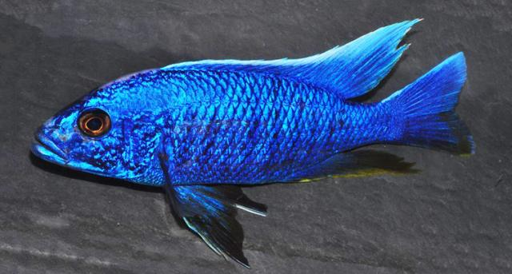
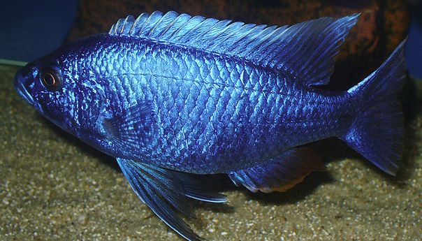
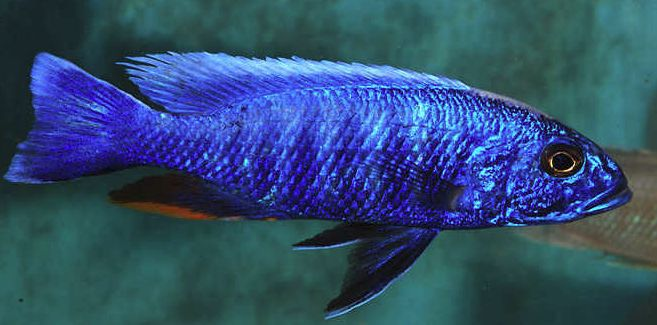

Акваріумні рибки
Хижі рибки
Цихліди
Цихліди Африки
Цихліди озера Малаві
Хаплохромис Джексона

ХАПЛОХРОМИС ДЖЕКСОНА И ЕГО СОДЕРЖАНИЕ
Васильковый хаплохромис или хаплохромис Джексона (Sciaenochromis fryeri), очень популярен из-за своей ярко-синей окраски, за которую он и получил название.Родом он из Малави, где обитает по всему озеру и из-за этого его окраска может достаточно сильно отличаться в зависимости от места обитания. Но, основным цветом у хаплохромиса будет все равно голубой. Благодаря этому даже произошла ошибка, так как впервые его импортировали в аквариум как сцианохромиса ахли (Sciaenochromis ahli), однако это два разных вида рыб. Затем он получил еще пару отличных названий, пока не был назван Sciaenochromis fryeri в 1993 году.
Васильковый хаплохромис один из четырех видов рода Sciaenochromi:
- Sciaenochromis fryeri Konings, 1993
- Sciaenochromis ahli (Trewavas, 1935) (Electric Blue Hap)
- Sciaenochromis benthicola Konings, 1993
- Sciaenochromis psammophilus Konings, 1993 (Electric Blue Kande)
Bпрочем он и самый известный. Принадлежит он к отличному от мбуна виду, обитающему в местах где каменное дно перемешано с песчаным грунтом. Не такие агрессивные как мбуна, они все же территориальные, предпочитают держаться скалистых мест, где могут прятаться в пещерах.
Рыба не сложная в содержании, даже для начинающих. Серебристые самки выглядят не очень привлекательно, но васильковые самцы полностью компенсируют невзрачность самок. В аквариуме они умеренно агрессивные и хищные. За ними просто ухаживать, но любую рыбку которую они смогут проглотить, ждет незавидная участь.
Иногда василькового хаплохромиса путают с другим видом, который похож по окраске — меланохромисом йохани. Но, это совершенно другой вид, принадлежавший к мбуна и гораздо более агрессивный. Так же его часто называют а другим видом Sciaenochromis ahli, но по зарубежным источникам это все же две разные рыбы. Они очень схожи по окраске, но ахли более крупный, достигает 20 см и более.
Впрочем, информация по африканским цихлидам очень противоречива и отличить истину довольно сложно.

ОБИТАНИЕ В ПРИРОДЕ
Рыбка васильковый хаплохромис впервые был классифицирован Конингом в 1993 году, хотя открыт еще в 1935. Это эндемик озера Малави в Африке, обитающий только в этом озере, но широко в нем распространенный. Держатся они на границе между каменистым и песчаным дном на глубинах до 25 метров. Хищные, в основном питаются мальками цихлид мбуна, но так же и другими хаплохромисами не брезгуют. Во время охоты прячутся в пещерах и камнях, подстерегая жертву.
ОПИСАНИЕ
Классическое для цихлид вытянутое тело, помогающее в охоте. Вырастают васильковые размером до 16 см в длину, иногда немного больше. Средняя продолжительность жизни этих малавийских цихлид — 8-10 лет.
Все самцы голубого (василькового цвета), с 9-12 вертикальными полосами. На анальном плавнике есть желтая, оранжевая или красная полоса. Южная популяция хаплохромисов отличается тем что у них на спинном плавнике идет белая кайма, а у северной она отсутствует. Впрочем, в аквариуме уже невозможно встретить чистую, природную окраску. Самки серебристые, хотя половозрелые могут отливать голубизной.
СЛОЖНОСТЬ В СОДЕРЖАНИИ
Неплохой выбор для аквариумиста, который решил попробовать завести африканцев. Они умеренно агрессивные цихлиды, но, конечно же, не подходят для общего аквариума. Как и для других малавийцев, для василькового хаплохромиса важна чистая вода со стабильными параметрами.
КОРМЛЕНИЕ
Васильковый хаплохромис — всеядный, но в природе в основном ведет хищный образ жизни. В аквариуме же съест любую рыбу которую сможет проглотить. Кормит его следует качественными искусственными кормами для африканских цихлид, добавляя живые корма и мясо креветки, мидии или кусочки филе рыбы.
Мальки едят измельченные хлопья и гранулы. Кормить следует несколько раз в день, небольшими порциями, так как они склонны к обжорству, которое нередко приводит к гибели.

СОДЕРЖАНИЕ И УХОД
Лучше содержать василькового хаплохромиса в аквариуме от 200 литров, достаточно просторном и вытянутом. Вода в озере Малави отличается высокой жесткостью и стабильностью параметров. Чтобы обеспечить необходимую жестокость (если у вас мягкая вода), нужно прибегать к ухищрениям, например, добавлять в грунт коралловую крошку.
Оптимальные параметры для содержания:
- температура воды:
- 23-27oС
- pH:
- 6.0-7.8
- dGH:
- 5-19
Помимо жесткости, они также требовательны к чистоте воды и низкому содержанию в ней аммиака и нитратов. Желательно использовать в аквариуме мощный внешний фильтр и регулярно подменивать часть воды, сифоня при этом дно.
В природе хаплохромисы живут в местах где встречаются как нагромождения камней, так и участки с песчаным дном. В общем, это типичные малавийцы, которые нуждаются во множестве укрытий и камней и совершенно не нуждаются в растениях. Чтобы создать природный биотоп используйте песчаник, коряги, камни и прочие элементы декора.
catfishes.ru